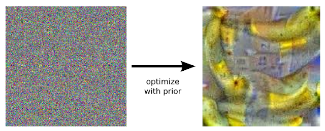
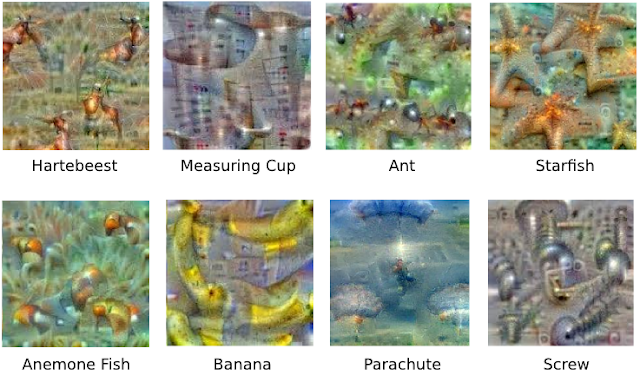

The reverse direction.
A classifier is trained to map an image to a label. If you freeze its weights and run gradient ascent on a class score, the pixels change instead of the parameters. Start from noise, ask for 'banana', and the noise slowly organizes into banana-like shapes.
The result looks surreal because the network is not drawing a photograph. It is projecting its learned features back into pixel space. Low layers produce edges and strokes; higher layers assemble whole objects. Freezing the weights is the point: the question is not “what would a good image look like?” but “what does this fixed detector respond to?” The image is the answer, read backwards.
Starting from noise matters too. A blank or natural image already contains structure the network can latch onto; noise is neutral enough that the gradient has to supply the shape. Iterating the process — recognize, amplify, repeat — is what turns a faint preference into a full-blown hallucination.
A window into learned features.
Inceptionism (Mordvintsev et al., 2015) is a simple interpretability tool. It shows that the network's knowledge is distributed across layers and can be visualized by optimizing the input. It also explains pareidolia: like a child seeing animals in clouds, the network finds its templates in noise.
The images are not evidence that the model is conscious or dreaming in the human sense. They are a picture of what the weights have learned to respond to. Nor is this how modern image generators work: a diffusion model is trained to reverse noise, so it learns the distribution of images. Inceptionism interrogates a classifier that was never trained to make images at all. That is exactly why its “dreams” look like the inside of a feature detector rather than a photograph.
What the layer sees.
The layer you optimise changes the dream. Early layers respond to edges, colours, and simple textures; deeper layers assemble parts and whole objects. The same image can be pushed toward a class at different depths, and the result looks like a different kind of hallucination.
The dreams also reveal associations in the training data. A dumbbell may appear with an arm because the two co-occur; a tower may grow fractal copies of itself because the network has learned a texture. These are not symbols the model understands; they are patterns it has learned to expect.
Inceptionism is an interpretability tool, and like every interpretability tool it shows a partial picture. The image is a projection of learned features back into pixel space, not evidence of consciousness or human-like imagination.


Turn the network around · demo
Choose a class and turn up the strength. The pixels start as noise; the network's learned template slowly emerges.
Dream Logic: The Weightlifter's Dumbbells
The same effect recurs everywhere: clouds swirled into birds, rocks rebuilt as towers and pagodas, leaves peppered with animals, even a duck-billed platypus appearing in a portrait's armpit. Each is a feedback loop — recognize, amplify, repeat — until the network's own expectation takes over. This is engineered pareidolia, the machine counterpart of the face in the Jupiter photograph or in everyday household objects: our visual system and a convolutional net both project trained patterns onto ambiguous input.
The Dream Map
But because the data is stored at such a high abstraction, the results are an interesting remix of these learned features — neither faithful reproductions nor noise, but the network's own hybrids.
A Tool, Not a Mirror
All images on this page come from the original blog post and are licensed by Google Inc. under a Creative Commons Attribution 4.0 International License, except for the MIT Places-database images, which are not used here.
Dreams with a method.
The original essay showed noise turning into a banana, and a cascade of surreal objects when the process was iterated with zoom. It also showed dumbbells with arms, because the network had learned the co-occurrence of the two in its training data.
The images are not random; they are the network's learned features projected back into pixel space. The method is a diagnostic: it shows what a layer responds to, and how the training data shaped it. It is a tool, not a mirror of a mind.
The short version.
A network's knowledge can be turned into an image.
The dream is not imagination; it is the network's learned templates projected onto noise.